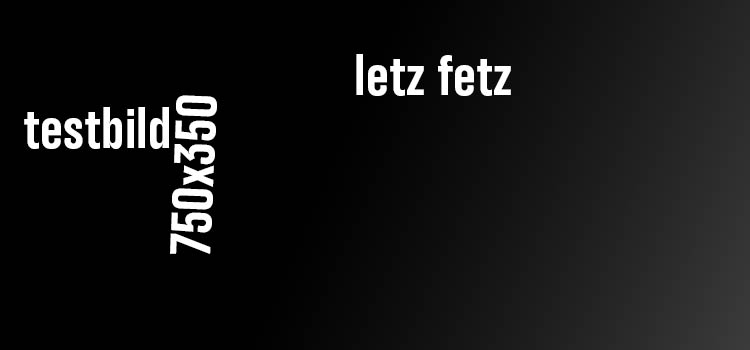
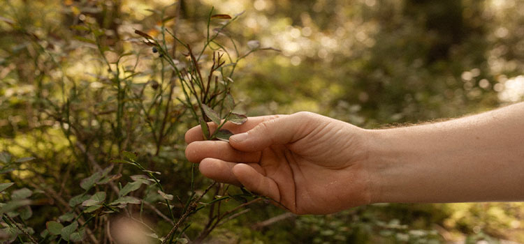
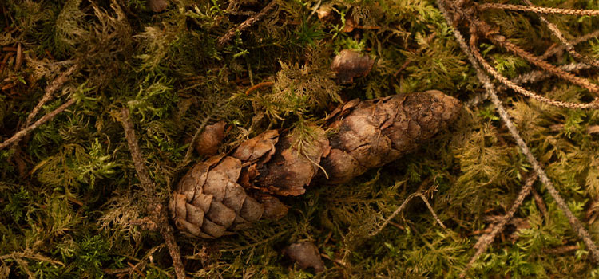

Thai Massage
Traditionelle Druck- und Dehnungstechniken.








Traditionelle Thai Massage verbindet gezielten Druck, Dehnung und achtsame Berührung. In unserem Thai-Massage-Studio in Sulzberg (Oberallgäu), nur 10 km von Kempten entfernt, nimmst du dir Zeit für dich und lässt den Alltag für einen Moment hinter dir.
Traditionelle Druck- und Dehnungstechniken.
Sanfte Berührungen für tiefe Entspannung.
Illerstraße 10 · 87477 Sulzberg
faichele@web.de